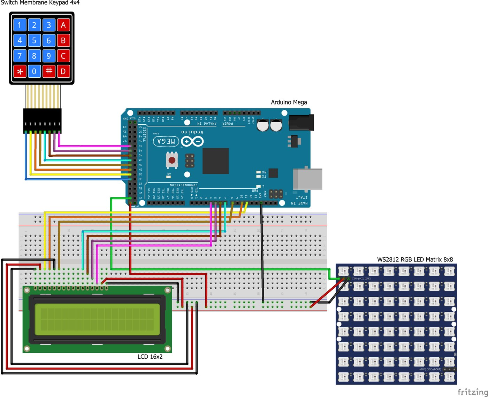
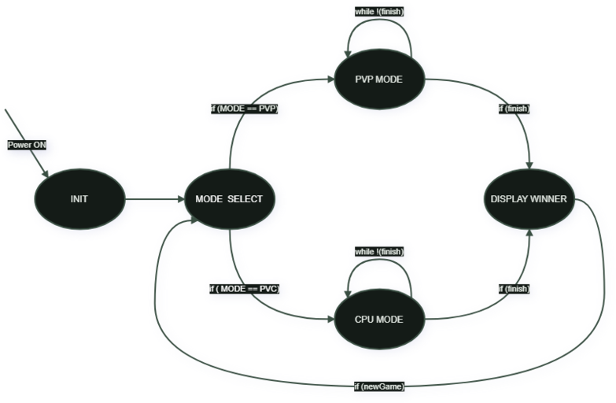
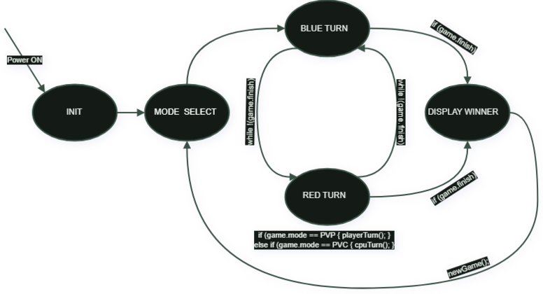

ARDUINO ARCADE
Two turn-based games running on one Arduino Mega — no display library shortcuts, no game engine. Every LED, every keypress, and every AI move is driven by code written from scratch.
The Rig
Both games run on the exact same physical setup. I built the checkers board right after finishing tic-tac-toe and reused the wiring rather than starting over. An Arduino Mega reads button presses from a membrane keypad, prints game status to a character LCD, and drives a grid of individually-addressable RGB LEDs that stands in for the board itself.

Module 01
Classic 3-in-a-row, playable two-player or against the CPU. Since the LED matrix is 8×8 and a tic-tac-toe board is 3×3, each cell became a 2×2 block of LEDs, with a full row and column as a yellow grid line between cells — visible in the recreation above.

delay() for a manual elapsed-time check in the main loop.Module 02
Full 8×8 checkers, this time using the LED matrix at its native resolution — no compromise layout needed. Pieces move diagonally, capture by jumping an opponent, and promote to "kings" on reaching the far row.

Looking Back
Structuring both games as explicit state machines made a real difference — with no operating system underneath to lean on, having named states and clear transitions kept the game loop predictable instead of turning into a tangle of flags. It's the same reason I split each project's code into separate header files once a single .ino stopped being manageable.
The bigger lesson was the gap between an algorithm on paper and what a microcontroller can actually run in real time. Minimax worked cleanly for tic-tac-toe's small search space; the same approach hit a wall on checkers' much larger board, and knowing when to trade optimality for something that actually runs on the hardware turned out to be as important as the algorithm itself.
And underneath both projects was a lot of low-level peripheral work I'd never had to think about before: scanning a matrix keypad, addressing LEDs individually over a single data line, driving an LCD over a 4-bit parallel interface. None of it is hard in isolation, but getting all of it talking to one Arduino Mega at once, on a shared 500ms tick, is where the real debugging happened.